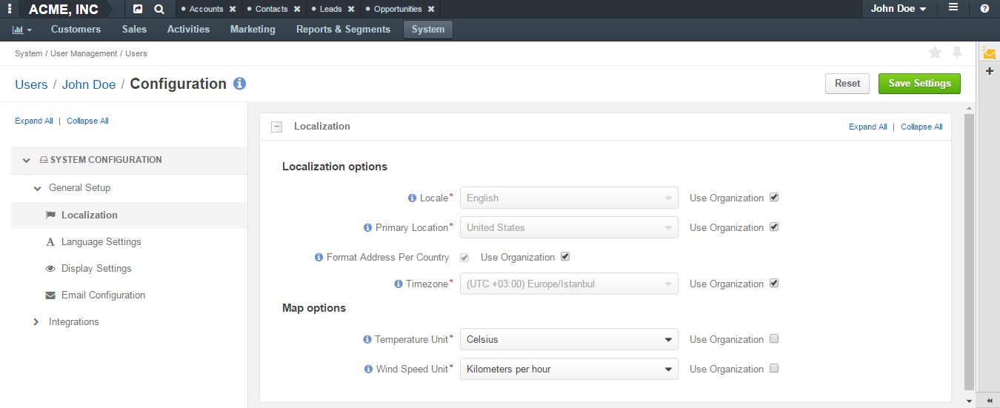
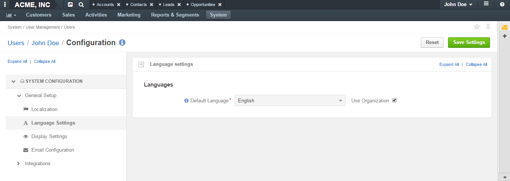
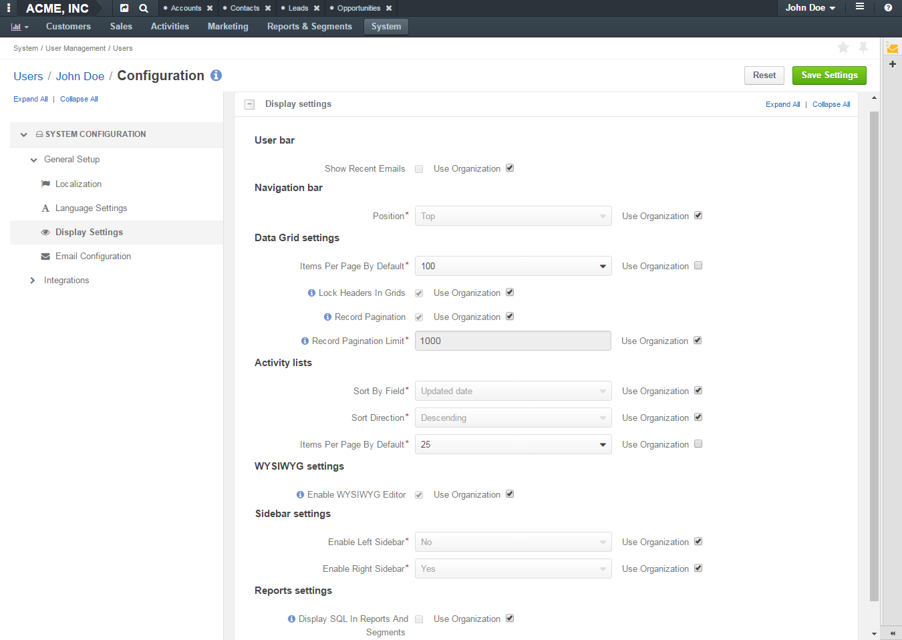
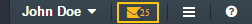
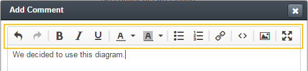
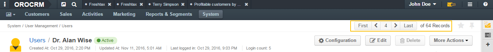
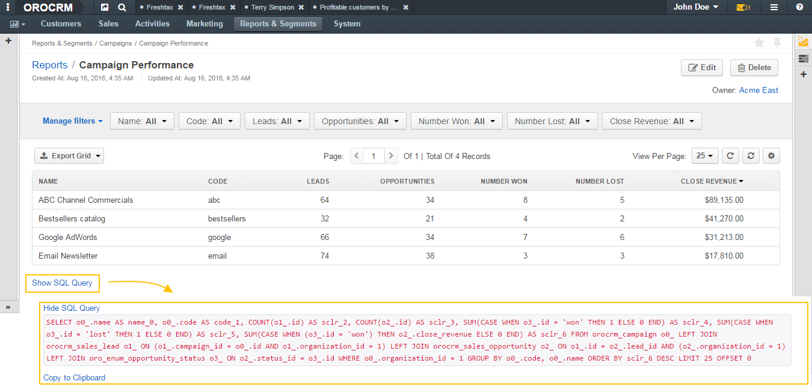
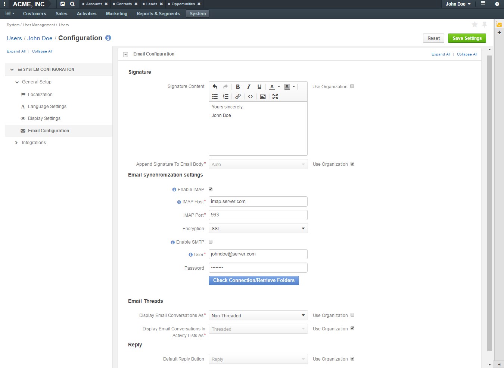

My Configuration¶
For each option, you can set up an organization value by selecting the Use Organization check box next to it.
To revert changes to the default settings, click the Reset button in the upper-right corner of the page.
General Setup¶
Localization¶
Localization options
| Field | Description |
|---|---|
| Locale | Select the default locale for the user. Numbers, addresses, names and dates will be formatted according to the selected locale. |
| Primary Location | Select the country which will be considered the user’s primary location. The addresses the user sees on the interface will be formatted according to the rules of this country. |
| Format Address Per Country | When this option is selected, addresses will be formatted according to the rules of their countries. Otherwise, the primary location formatting will be applied. |
| Timezone | Select the timezone for the user location. All dates and times will be displayed according to the specified timezone. |
Map options
| Field | Description |
|---|---|
| Temperature Unit | Select the temperature unit. This settings will be applied for weather on map. |
| Wind Speed Unit | Select the wind speed unit. |
Language Settings¶
Languages
| Field | Description |
|---|---|
| Default Language | Select the default language for the interface. |
Display Settings¶
User bar
| Field | Description |
|---|---|
| Show Recent Emails | Select this check box to display the recent emails on the user bar (they will appear next to the user name).  |
WYSIWYG settings
| Field | Description |
|---|---|
| Enable WYSIWYG Editor | Select this check box to enable text formatting tools for emails, notes and comments.  |
Data Grid settings
| Field | Description |
|---|---|
| Items Per Page By Default | Select how many records will appear on one page of record grids. |
| Lock Headers In Grids | Select this check box to ensure that headers of a record grid will stay visible while you scroll. |
| Record Pagination | Select this check box to enable the user navigate to the previous or next grid record from a record view page.  |
| Record Pagination Limit | Type the maximum number of records that the user can navigate from a record view page. |
Navigation bar
Field Description Position Select whether the OroCRM main menu will be positioned at the top of the page or on its left.
Activity lists
| Field | Description |
|---|---|
| Sort By Field | Select whether to sort activity records by the date when they were created or by the date when they were updated for the last time. |
| Sort Direction | Select whether to sort records in the ascending or descending direction. |
| Items Per Page By Default | Select how many records will appear on one page of the activity grids. |
Sidebar settings
Field Description Enable Right Sidebar Select Yes to enable the user to see and utilize the right sidebar. Enable Right Sidebar Select Yes to enable the user to see and utilize the right sidebar.
Reports settings

Field Description Display SQL In Reports And Segments Select this check box to enable the user to review the SQL request sent to the system for a report or a segment.
Email Configuration¶
Signature
Field Description Signature Content Type the signature to be appended to the user’s emails. Append Signature To Email Body Select whether the signature must be appended automatically or manually.
Email synchronization settings
Field Description Enable IMAP Select this check box to enable the IMAP synchronization of the user’s remote mailbox with their OroCRM mailbox. Additional fields that alow you to configure IMAP settings will appear. IMAP Host Available only when Enable IMAP is selected. Enter a host name of your IMAP server, e.g. imap.gmail.com. IMAP Port Available only when Enable IMAP is selected. Enter a port that IMAP uses, e.g. 993. Encryption Available only when Enable IMAP is selected. Select the type of encryption: SSL or TLS. Enable SMTP Select this check box to enable the SMTP synchronization of the user’s remote mailbox with their OroCRM mailbox. Additional fields that alow you to configure SMTP settings will appear. SMTP Host Available only when Enable SMTP is selected. Enter a host name of your SMTP server, e.g. imap.gmail.com. SMTP Port Available only when Enable SMTP is selected. Enter a port that SMTP uses, e.g. 993. Encryption Available only when Enable SMTP is selected. Select the type of encryption: SSL or TLS. User Enter a username used to access mailbox on the configured server. For example, for Gmail, an email address server as a username: alanwise@gmail.com Password Enter the password to a user’s mailbox. Click the Check Connection/Retrieve Folders button to check whether the specified synchronization settings are correct and to retrieve the current folder structure of the user’s remote mailbox.
Email Threads
Field Description Display Email Conversations As Select whether to visually group original emails with replies to them or show all emails separately. Display Email Conversations In Activity Lists As Select whether to visually group original emails with replies to them in the Activities sections of the record view pages or show all emails separately.
Reply
Field Description Default Reply Button Select which button will be default for replying to emails: Reply or Reply All. Other button will continue be available in the Reply menu, it will just not be on the top of the list.

MS Outlook Settings¶
Note
This functionality is available only for OroCRM an OroCommerce Enterprise Edition.
Integration settings
| Field | Description |
|---|---|
| Sync Direction | Select whether the data will be taken from OroCRM to Outlook, from Outlook to OroCRM or synchronization will occur in both directions. |
| Conflict Resolution | Select whether OroCRM or Outlook has priority if the same piece of data has been changed in both systems. |
| CRM Sync Interval (In Seconds) | Type how often changes on OroCRM side will be checked. |
| Outlook Sync Interval (In Seconds) | Type how often changes on Outlook side will be checked. |
Synchronization settings
| Field | Description |
|---|---|
| Contacts | Select this check box to synchronize the contacts. |
| Tasks | Select this check box to synchronize the tasks. |
| Calendar Events | Select this check box to synchronize the calendar events. |
Related Topics